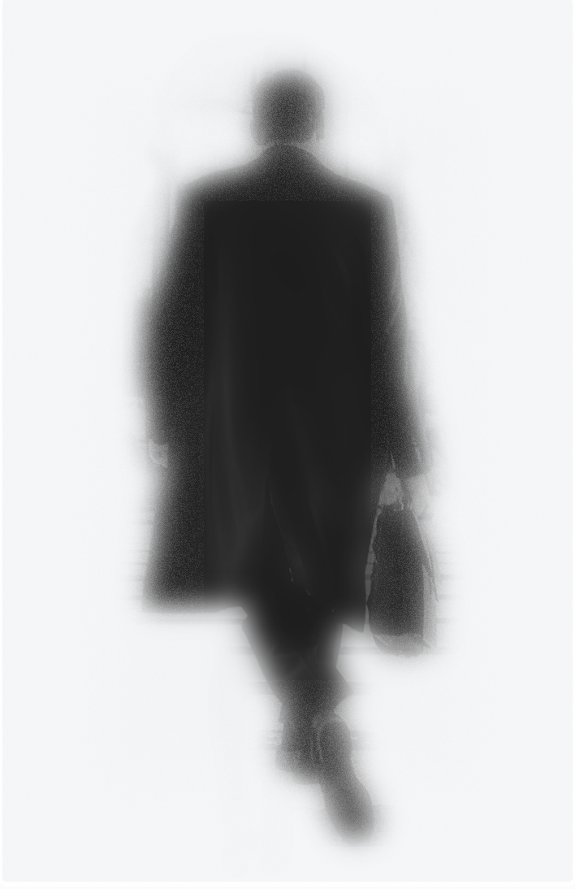

Parallax
Universe
Hello, my name is Waleed Mansoor Ahmed. I am currently in my sophomore year of my B.DES degree at the Dubai Institute of Design and Innovation. Growing up, I have always seen myself get drawn towards technology, and I have always loved the idea of how technology can build and shape things that may seem impossible to achieve at first.
With this course, I hope to build a good foundation and the know-how of how to solve problems and become a self-sufficient designer. Coding poses a set of challenges, and technical thinking and being able to code things from scratch and see them work is highly motivating. Most of the time, you have to figure out things on your own as a programmer. So being able to learn and do things on your own and apply it to your everyday design work, I hope to become an all-rounder and a self-sufficient designer.
A big idea that I would like to explore is to create something interactive with lights and motion.
One thing that I probably fear with this course is not being able to keep pace with the course's content because of the challenges I might encounter with coding and the time I might take to tackle them.
I consider two people that have inspired and brought much-needed change into my life as a person and as a thinker. One of them is Elon Musk and the other one being Gary Vaynerchuk.
I highly admire Musk's innovative capabilities and the way he comes up with things all by himself. He is exceptionally persistent and a forward thinker. I love how he was able to build rockets just by reading books and being around people that had the knowledge regarding the topic. I wish to be a life-long learner and innovator like him. As for Gary Vaynerchuk, he inspires me to move out of my comfort zone and push myself. His extremely straight forward attitude and humbleness propels me to keep working towards my goals and to love and enjoy the process while I'm at it.